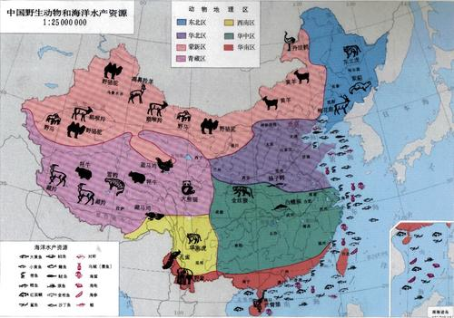

东北区

本区包括大、小兴安岭和长白山的山地森林及山麓一带的森林草原，西部的松花江和辽河平原。气候寒冷，大、小兴安岭在0℃以下的时间长逾半年，是我国最冷的地区。本区森林茂密，大部地区覆盖着原始针叶林。因此本区耐寒性的森林动物十分丰富，所产毛皮兽不论在种类上或数量上均占全国首位，由于气候寒冷，毛丰密而保暖性强。
毛皮兽中食肉目以鼬科为多，如紫貂、水獭、黄鼬、香鼬、艾虎、獾等。猫科中以山猫量最多，东北虎最为名贵，其它有猞猁、金钱豹等。犬科中以貉和赤狐最为重要，另有狼、豺等。熊科中以黑熊最为普遍。在森林地带，有丰富的植物性食物和良好的隐蔽条件，有利于啮齿类的生存。啮齿目中以松鼠(灰鼠)为最重要，主要以林中盛产的松子为食，此外花鼠(五道眉)也很多。棕背鼥、红背鼥、林姬鼠等优势鼠种对红松更新破坏作用很大。
沼泽化草甸是莫氏田鼠Microtus maximowiczii占优势的地方，在林间草地和岩裸区是北鼠兔Ochotona hyperborea主要活动的场所。许多食草的偶蹄类几乎遍布于森林地带，如狍、麝、东北马鹿、野猪等。在大兴安岭山地北部气候最寒，有些栖息于北极圈及西伯利亚的寒带典型种类分布至此，如狼獾、驼鹿(俗称堪达罕)、雪兔和森林旅鼠。这些可说是在全国范围内仅有的特产。
鸟类方面以松鸡科与雉科的种类最为繁多。松鸡科是西伯利亚泰加林的代表动物，其中大多数的种在全国范围内仅见于本区。除了留鸟以外，还有不少在南方越冬的种类，夏季迁到本区繁殖。如前所述，一般鸟类大都在它们分布范围内的最冷地区营巢产卵。
爬行类和两栖类在本区较贫乏，代表种类有胎生蜥蜴、黑龙江草蜥、林蛙(哈士蟆)、花背蟾蜍、东方铃蟾、北方狭口蛙、粗皮蛙及极北小鲵等。
本区是我国狩猎事业最发达的地区，长期的狩猎及人类在境内开伐森林的经济活动，对本区动物的影响是显著的，因此对于珍贵毛皮兽的保护和驯化是十分重要的。紫貂、水獭、梅花鹿都已列为禁猎的种类。梅花鹿和马鹿的鹿茸均为贵重药材，其驯养事业在东北地区已很发达，另外，由苏联过来的麝鼠Ondatra zibethica，在本区的分布已相当广泛，是重要的毛皮兽之一。